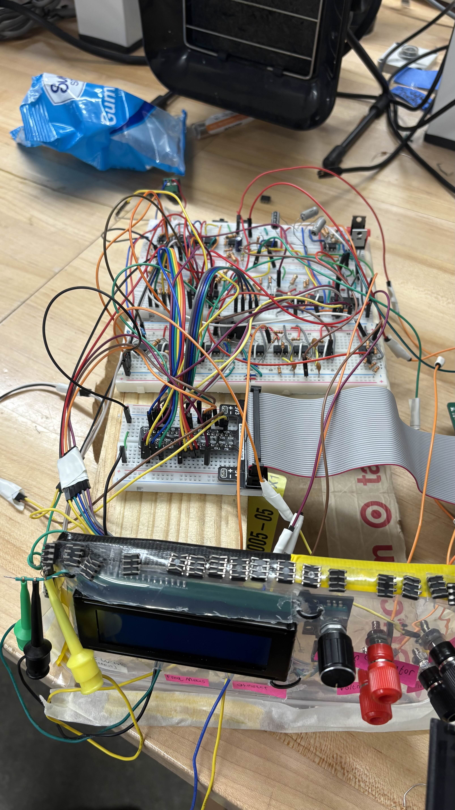
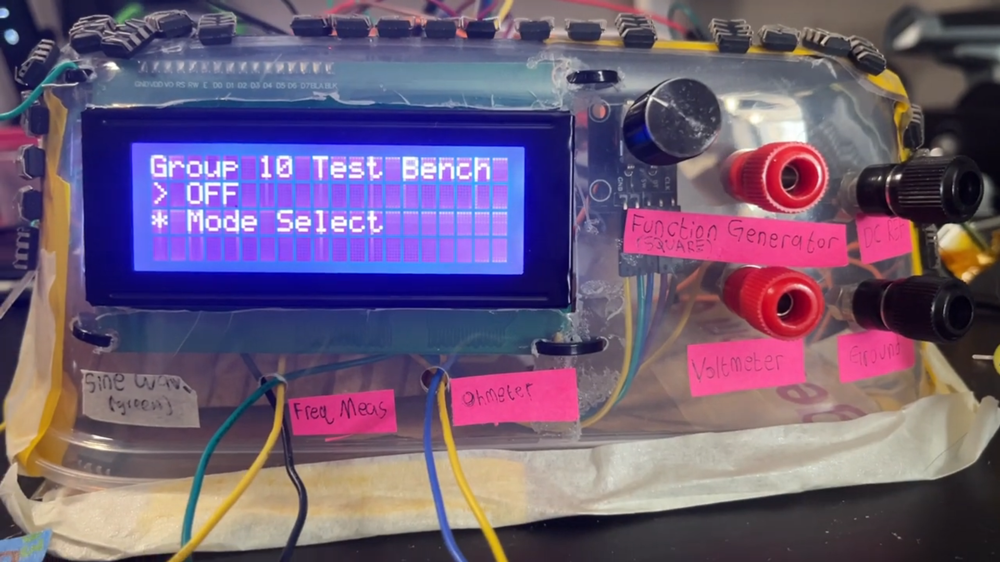
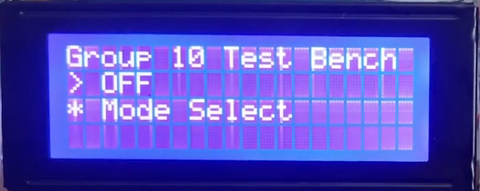
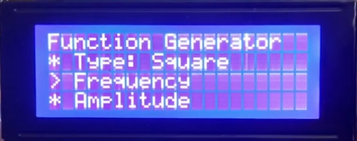
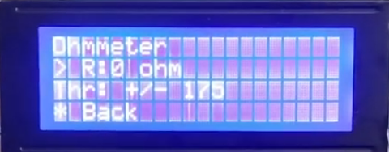
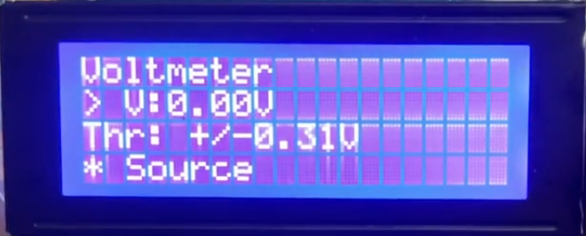
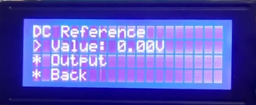
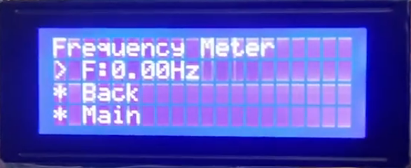

This is the user manual for the ECSE 2920 Electronics Tool Bench built by Group 10. It is written for a first-time user and explains how to safely power the system, navigate the menu, and use each measurement and signal-generation mode.
Before You Begin
Only operate the workbench in dry, indoor environments.
Make sure the Raspberry Pi and the 24 V supply are connected correctly.
Make sure all external test leads are connected to the correct labeled terminals.
Do not unplug or modify any wiring while the system is powered.
Wait for the LCD startup screen before using the controls.
Quick Start
Plug in the power cable first, then plug in the Raspberry Pi.
Power cable plugs into the back of the device.
USB-C cable plugs into the Raspberry Pi.
Wait for the LCD to finish startup and display Group 10 Test Bench.
Rotate the encoder to highlight Mode Select.
Press the encoder to enter the menu.
Rotate to the mode you want and press the encoder to select it.
Use Back to go up one level, or Main to return to the top menu.
Holding the encoder for 3 seconds also returns you to the start menu from anywhere.
Output a selectable DC reference voltage (−5 V to +5 V, 0.625 V steps)
Measure the frequency of an external sine wave (1 kHz – 10 kHz)
The Project

Full assembled bench — front view
The completed Group 10 Electronic Tool Bench integrates a Raspberry Pi, a blue LCD display, a rotary encoder, and custom analog circuitry into a single benchtop unit.

LCD display and rotary encoder interface
System Overview
Microcontroller: Raspberry Pi
Display: Blue 16×2 LCD
Input: Rotary encoder with push button
Power rails: ±12 V
GPIO limit: 16 mA per pin
Outputs: High-impedance function generator and DC reference terminals
Inputs: Labeled terminals for voltmeter, ohmmeter, and frequency measurement
Controls and UI

All interaction is done through a rotary encoder with push-button and a blue LCD display. The cursor position is marked by > and all other options by *.
Encoder Controls
Rotate clockwise: move cursor down one row
Rotate counterclockwise: move cursor up one row
Press once: select the highlighted option
Hold 3 seconds: return to the start menu from anywhere
Back (menu option): return to the previous menu level
Main (menu option): return to the main screen
Adjusting a Value
When you select a value to edit, the encoder enters Edit Mode. Rotating slowly changes the value in small increments; rotating faster changes it by a larger amount. Press the encoder to confirm and apply the displayed value. Hold the encoder for 3 seconds to exit the edit menu and return to the previous menu.
Note: selecting DC Reference from the Voltmeter menu does not set a value — it only redirects the measurement path. This is the only exception to the press-to-set behavior.
Navigation Tree
Main Menu: Group 10 Test Bench
├─ Mode Select
│ ├─ Function Generator
│ │ ├─ Type → Square / Sine
│ │ ├─ Amplitude → Amp: +/- X V
│ │ ├─ Frequency → Freq: X Hz
│ │ ├─ Output → On / Off
│ │ ├─ Back
│ │ └─ Main
│ ├─ Ohmmeter
│ │ ├─ Resistance → Resistance: X Ω
│ │ ├─ Back
│ │ └─ Main
│ ├─ Voltmeter
│ │ ├─ Source → External / Internal Reference
│ │ ├─ Voltage → voltage: X V
│ │ ├─ Back
│ │ └─ Main
│ ├─ DC Reference
│ │ ├─ Voltage Value Input → V-ref: +/- X V
│ │ ├─ Output → On / Off
│ │ ├─ Back
│ │ └─ Main
│ ├─ Frequency Measurement
│ │ ├─ Frequency → Hz: X Hz
│ │ ├─ Back
│ │ └─ Main
│ ├─ Back
│ └─ Main
└─ Off / Exit
Navigation Tips
If you are unsure where you are, hold the encoder for 3 seconds or select Main.
When leaving any output mode, the output returns to its safe default off state.
Always check the LCD before connecting or disconnecting signals.
Function Generator

The Function Generator produces either a zero-centered square wave or a positive-only sine wave. Set up your oscilloscope connections first, then configure the output through the menu.
Step 1 — Physical Connections
Connect a BNC cable from your oscilloscope to the respective hook clip on the front panel of the bench.
Attach the oscilloscope's positive probe tip to the correct color-coded hook on the front panel:
Sine wave → Green hook. Use this hook when generating a sine wave.
Square wave → Yellow hook. Use this hook when generating a square wave. Both hooks share the same BNC hole on the panel.
Attach the oscilloscope probe's ground clip to the ground banana plug on the front panel. All measurements on this bench share this common ground.
Step 2 — Configure and Enable Output
Navigate to Main > Mode Select > Function Generator.
Select Type and choose Square or Sine to match the hook you connected above.
Select Frequency > Input Frequency, rotate the encoder to the desired value, and press to confirm.
Select Amplitude > Input Amplitude, rotate to the desired peak voltage, and press to confirm.
Select Output and choose On. The LCD will show the active waveform settings.
Verify the waveform shape, frequency, and amplitude on your oscilloscope.
Square Wave Specs
Centered at 0 V (symmetric positive and negative swing)
Fixed 50% duty cycle
Frequency range: 100 Hz to 10 kHz
Amplitude adjustable up to ±10 V
Sine Wave Specs
Positive voltage only (0 V to 10 V)
Amplitude adjustable in 0.625 V steps
Frequency range: 1 kHz to 10 kHz in 500 Hz steps
Important Notes
This output is high impedance — do not drive heavy loads directly from it.
Never apply an external voltage into the function generator output terminals.
When leaving this mode via Back or Main, the output defaults to off automatically.
Ohmmeter

The Ohmmeter measures an external resistor and displays the value and its tolerance on the LCD. It autoranges within its supported range with no manual range selection needed.
Step 1 — Physical Connections
Locate the two hooked cables coming out of the ohmmeter port on the front panel — one yellow hook and one blue hook.
Connect your resistor across both hooks, one lead to yellow and one lead to blue. Either orientation works.
Make sure the resistor is completely removed from any other circuit before connecting it. Never measure a resistor that is connected to a powered circuit.
Step 2 — Read the Measurement
Navigate to Main > Mode Select > Ohmmeter.
Press the encoder knob to trigger a fresh resistance reading.
The LCD will display the measured resistance and its tolerance (e.g., 1000 Ω ± Y Ω).
If no resistor is connected, the display will read inf ohm — this is normal and expected.
Measurement Range
500 Ω to 10 kΩ (autoranging)
Values outside this range may not read accurately
Best Practices
Only measure resistors within the 500 Ω – 10 kΩ range.
Wait briefly after pressing the knob for the reading to stabilize before recording the value.
Do not touch both hooks simultaneously while measuring — body resistance will affect the reading.
Voltmeter

The Voltmeter measures DC voltage and displays the result alongside a tolerance value (e.g., 2.5 V ± 0.3125 V). It can read an external voltage source or verify the bench's internal DC Reference output.
Step 1 — Physical Connections (External Mode)
Take your DC power supply and connect its ground lead to the ground banana plug on the front panel.
Connect the positive lead to the terminal labeled “Voltmeter” on the front panel.
Confirm the supply voltage is within the −5 V to +5 V range before proceeding.
Step 2 — Read the Measurement
Navigate to Main > Mode Select > Voltmeter.
Select Source and choose External.
Press the encoder knob to take a reading.
The LCD will display the measured voltage and its tolerance.
Source Options
External: reads a voltage applied at the Voltmeter terminal on the front panel.
Internal Reference: reroutes the voltmeter to read the DC Reference output through the internal signal path. No external wiring needed for this mode.
Measurement Range
−5 V to +5 V DC only. Do not exceed this range.
Note
If Internal Reference is selected, the interface may navigate into the DC Reference path so you can set and verify the internal source value. Pressing a value in that sub-path does not set it — this is expected behavior.
DC Reference

The DC Reference generates a precise, selectable DC voltage. You can monitor the output on an external voltmeter and also verify it internally through the bench's own voltmeter display.
Step 1 — Physical Connections
Using banana cables, connect an external voltmeter (or multimeter set to DC voltage) to the terminal labeled “DC Ref” on the front panel.
Connect the external voltmeter's ground lead to the ground banana plug on the front panel.
Your external voltmeter will display the live output voltage once the reference is enabled.
Step 2 — Set the Voltage and Enable Output
Navigate to Main > Mode Select > DC Reference.
Select Voltage Value Input. Rotate the encoder to scroll through the available levels (−5 V to +5 V in 0.625 V steps).
Press the encoder to confirm and set the displayed voltage.
Navigate down to Output and select On. The reference voltage is now active at the DC Ref terminal.
Step 3 — Verify the Output
Your external voltmeter connected to the DC Ref terminal will display the output voltage directly.
To also verify internally on the bench, navigate to Voltmeter > Source > Internal Reference. The bench's own voltmeter will read the DC Reference output through the internal path and display it on the LCD.
Output Range
−5 V to +5 V, adjustable in 0.625 V steps
Important Notes
This is a high-impedance reference output, not a power supply. Do not use it to drive loads or power other circuits.
When leaving this mode via Back or Main, the output defaults to off automatically.
Frequency Measurement

This mode measures the frequency of an incoming external sine wave and displays the live reading on the LCD.
Step 1 — Physical Connections
Connect your external sine wave source to the terminal labeled “Freq Meas” on the front panel.
Connect the signal source's ground to the ground banana plug on the front panel.
Confirm the source is active and outputting a sine wave within the 1 kHz – 10 kHz range before proceeding.
Step 2 — Read the Frequency
Navigate to Main > Mode Select > Frequency Measurement.
Wait a moment for the LCD reading to stabilize.
Read the measured frequency value on the LCD. Press the knob to refresh the reading.
Supported Input
External sine wave only
Calibrated for 1 kHz to 10 kHz
Best Practices
Use a clean sine wave from a stable source. A noisy or clipped signal may give inconsistent readings.
If no value appears on the LCD, verify the source is powered on and within the supported frequency range.
Video Tutorials
Each video below walks through the full setup and operation of one component. Watch before your first use or refer back any time you need a refresher.
Function Generator Tutorial
Ohmmeter Tutorial
Voltmeter Tutorial
DC Reference Tutorial
Frequency Measurement Tutorial
Safety Instructions
General Operating Environment
Operate only in dry, indoor environments.
Do not unplug, modify, or rewire the workbench in any way, especially while powered.
Power Supply & Thermal Limits
Maximum recommended current on the ±12 V rails: 60 mA. Absolute maximum: 1 A.
Should not be an issue if using the provided power supply.
The power supply can become hot under load. Do not touch internal components while powered.
Signal Input Limits
Do not exceed the rated input voltage range on any terminal.
Never apply an external voltage into the function generator output terminals.
Ohmmeter: always isolate and depower the component before measuring. Never connect to a live circuit.
Emergency Procedure
If the bench smokes, smells unusual, sparks, or behaves erratically — immediately disconnect power and step back.
Troubleshooting & FAQ
Common Problems
LCD is on but nothing responds: Unplug and replug the Raspberry Pi. The program crashes on startup if the power supply was connected after the Pi — always plug the power cable in first.
No waveform output / incorrect waveform: Verify Output is set to On and the correct type is selected. Confirm the probe tip is on the correct colored hook (green for sine, yellow for square).
Voltmeter reading looks wrong: Confirm the selected source (External vs. Internal Reference) and check the banana plug connections at the Voltmeter terminal and ground.
Ohmmeter reads “inf ohm”: No resistor detected. Check that both leads are securely hooked onto the yellow and blue hooks.
Ohmmeter reading is unstable: Ensure the resistor is completely isolated from any powered circuit and that your fingers are not touching the hooks.
No frequency reading: Confirm a sine wave is present at the Freq Meas terminal and within the 1 kHz – 10 kHz range. Set the input offset of the sine wave to 0 V. A higher amplitude signal generally gives more reliable readings.
DC Reference output seems off: Navigate to Voltmeter > Internal Reference to verify the live output, and check the banana cable connections at the DC Ref terminal and ground.
FAQ
Why does the output turn off when I leave a menu? This is intentional safe default behavior to prevent unintended signals.
Can I use the voltmeter on any signal? Only DC signals within −5 V to +5 V. Do not exceed the input range.
Can I measure an in-circuit resistor? No. Remove it from any powered circuit and isolate it completely before measuring.
What does holding the encoder do? Holding for 3 seconds returns you to the start menu from anywhere in the menu.
Why won't a value set when I select DC Reference from the Voltmeter menu? That path only redirects the measurement source — it does not set a voltage value. This is expected behavior.
Can the DC Reference power a circuit? No. It is a high-impedance reference only and is not designed to drive loads.
Which ground do I use? All measurements on this bench share a single common ground via the ground banana plug on the front panel.